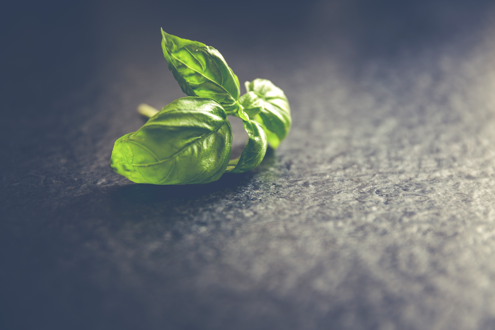

분수를 알라는 말이, 너는 안된다는 말로 다가오던 때가 있었습니다. 그래서 그 시절에 분수에 대한 말을 들을 때면 자존심도 상하고, 세상에 모든 것들이 정해진 대로 움직이는 듯한 기분에 휩싸이기도 했었습니다. 하지만 그것은 제가 분수에 대한 개념을 잘못 이해했기 때문이었습니다.
성과가 없는 초보자 상황에서 조금씩 성과를 만들어가며 성장하는 과정을 분석한 책들을 보며 분수에 대한 말이 다르게 다가오기 시작했습니다. 분수를 알라는 것이 나의 매타인지를 높이고, 어디로 가야할 지에 대한 계획을 세우라는 맥락으로 이해됐기 때문입니다.
물론 사람마다 저마다 정해진 그릇이란 것이 있을 지도 모릅니다. 하지만 그것은 무엇을 해본 사람들, 자신의 인생을 자신이 조종하며 앞으로 가본 사람들만이 할 수 있는 이야기입니다. 아무 것도 하지 않은 사람에게 그릇의 크기란 존재하지 않습니다. 오히려 그런 이들에게 그릇의 크기에 대한 담론은 자기가 아무것도 하지 않은 것에 대한 핑계일 뿐입니다.
저는 제가 적는 글들이 이미 그릇의 끝을 봤을 정도로 주도적으로 열심히 살아온 분들에게 전달되기를 원하지 않습니다. 그보단 저처럼 핑계만 대는 사람들, 변화를 주저하고 있는 사람들 이게 아니라는 것을 느끼면서도 결정을 못내리고 있는 사람들에게 전달되기를 바랍니다. 그리고 그 과정을 통해 우리네 삶에 유의미한 변화가 생겨나길 희망합니다.
저는 앞으로 성장하는 데에 매우 관심이 많습니다. 그 과정을 통해 저의 그릇을 키우고, 제가 원하는 삶을 살아가길 원합니다. 그것이 저의 관심사입니다.
